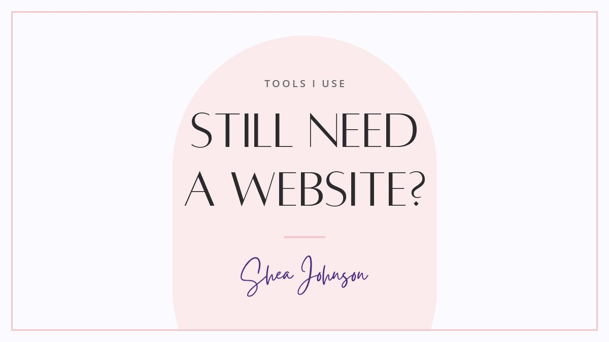

Let me tell you when I first got into websites.
It started back in 2017 when I was trying to build a website for the nonprofit I started for my mother, J&J Social Services Inc.
My motivation was to help my mother retire early.
And who knew that eight years later I’d know everything I know today.
I’ve taken class after class…
Experimented with platform after platform…
Hired freelancer after freelancer…
And built site after site.
I can’t put everything I know in this article.
But I’ll give you my best in the shortest time I can.
Where to Start
When it comes to websites, sometimes we “action takers” jump right into building, designing, and launching a beautiful website that no one knows about.
Whether we did it ourselves or hired someone to “take care of it” for us.
Which is amazing, but also risky.
It can feel like having a beautiful storefront in the middle of the desert that no one can see or find.
The best thing you can do is make sure you’ve covered the most important areas.
I’m going to detail those quickly:
Speed matters more than you think.
I learned recently that speed is everything.
And I get it — sometimes it’s the person’s phone or device.
But it can’t be everyone’s device, right?
If your website takes too long to load, they’ll leave.
And go straight to your competitor.
Without remorse.
Make your website easy to navigate.
Your visitor should know exactly what you want them to do.
And it should be easy to find what they’re looking for.
Know where to spend your time.
I’ve seen business owners spend two months on their logo and no time on their SEO.
It should be the other way around.
I learned from a mentor years ago.
He said, “Easy is the business.”
And I’ve found that to be very, very true.
The easier you make things for your consumer, the more they love you.
Which leads to return and repeat business.
Understanding What You Need vs. What You Don’t
A lot of us want things on our websites that we don’t need.
And the things we do need?
We never get the knowledge — or can’t afford the consultant — to make it actually work for us.
You don’t need fancy animations.
But you do need to be discoverable, searchable, findable.
Your website doesn’t need to be your favorite colors.
Do your research on what colors resonate best in your industry.
I remember getting into a small dispute with my mentor.
I really wanted black and white.
It’s just a favorite of mine.
And he said,
“Partner, it doesn’t matter what you like. What matters is the psychological impact your website has on your visitors when they land on it.”
Then he said,
“Did you know research shows most people tend to click on an orange button?”
That was the first time I’d ever heard anything like that.
I always thought websites looked how “we” wanted them to look. Not how the market says they should.
And one thing I learned in real estate?
The market controls the market.
I didn’t need any more convincing after that.
Where I Would Start Today
If I were to give you advice on where to start today?
Look at the most crucial features you need to run your business.
If you’re drop shipping or doing e-commerce, your website will look different than someone starting a blog or offering services.
Don’t fall for the trick of getting all the bells and whistles just because of what you plan to do in the far away future.
Keyword: far away.
I remember upgrading to premium packages because I was sold on features I planned to use someday.
Here’s what actually happened…
I built my website on Google Sites.
It was fine for my current needs.
Then I took more classes, invested in my knowledge, and learned Hostinger was better.
But only because my business model had changed.
Someone might ask, “Well, which platform do I choose and why?”
I’ll give you a few platforms I like and tell you what I did.
Platform Options
Google Sites:
Great for a basic one-pager when you’re not doing too much yet.
You can link buttons to third-party platforms and make it look beautiful.
Connect your domain and only pay for domain hosting — not the website itself.
Most budget-friendly option for beginners.
Carrd.co:
Impressive designs, integrations, and pricing.
More modern than Google Sites.
Great for freelancers starting out or someone with a basic email list.
May need workarounds for an SEO-optimized blog.
Hostinger:
An all-in-one package.
Takes care of SEO, speed, design, and functionality.
Easy to add a store and blog.
I was happy with Hostinger and had no complaints.
And if you have experience with drag-and-drop websites, it doesn’t take long to get set up.
The Website I’m Using Now and Why
Remember when I said my platform changed because my business model changed?
That happened again around October 2025.
I realized the best thing I could do — since I wanted to be 100% a digital content creator — was to get rid of all those bells and whistles I didn’t need anymore.
My Hostinger trial was ending.
I was about to renew Hostinger while my business was nowhere near where I wanted it to be.
Still in the infancy stages.
Not launching products the way I wanted.
Not making the money I wanted because life was happening.
It just wasn’t a smart purchase.
And the time it would take to rank in SEO manually versus leveraging social media and the platforms I was already on?
It made more sense to minimize my website as much as possible.
Here’s what I really think about websites:
They’re your employee with 50 arms.
They’re supposed to work for you.
They’re supposed to make money for you.
And when your website has a ton of bells and whistles and it’s not making you money…
Or you’re only breaking even…
Or your business just isn’t ready for all that…
Then have a website that serves your current phase.
Once you graduate to the next phase, you upgrade.
Website maintenance is just one of those business costs.
So right now I’m using Carrd.co.
I took advantage of their Black Friday deal.
Three full websites and I can connect my domains.
And I can still have everything I need for my current business model.
The Freelancers I’ve Been Using for Years
One thing I want to leave here is info about a friend of mine.
I’ve watched him grow his business since 2017.
He’s a freelancer on Fiverr.
His customer service and response time is amazing.
Less than an hour or several minutes if that.
He’s always come through when I didn’t feel like doing website work.
He’s also done work for other business owners I know.
And I must say, his work has always been impressive and A-1.
I was very happy with my websites including the business owners I’ve referred.
(Please request to see to his portfolio if you don’t believe me.)
I’m leaving his link below in case you want someone else to build your website.
(He specializes in Wordpress.)
But keep in mind when using a freelancer:
- Your call to action and layout strategy still matters
- They don’t write your web copy (but may offer it as an add-on)
- You still need to help develop the content
I’m also sharing another tech-savvy freelancer I use: Masood Noor.
I needed help connecting my domain to different hosts.
I wasn’t sure how to add or remove DNS records in the backend.
He shows up and goes above and beyond.
He gets back to me in minutes.
Truly amazing how responsive he is.
One time we had a small issue and he called in a buddy to help figure it out. They figured it out and crushed it… together.
A perfect example when I say he truly goes above and beyond.
He’s available by Zoom for questions and screen sharing.
He can even take control of the mouse if you need him to.
Truly impressive service and pricing.
And his willingness to teach as he goes along was one of my favorite things about working with him.
Oh, and Some Last Important Details I Forgot…
Accessibility is important.
It’s rare that someone will sue you because your website isn’t accessible.
But I wouldn’t take the risk.
Some platforms handle accessibility for you.
Otherwise, Google the requirements for accessibility features and reasonable accommodations for visitors with disabilities.
Very important. I’ll never undermine the seriousness of it.
And heat maps.
Those help with conversion.
They show where visitors hover the most.
This helps you find gaps in your conversion strategy.
Heat mapping might not be something you need early on.
But there are things like it you probably didn’t know about before reading this.
One thing I live by: I do not know what I do not know.
So hopefully you learned something today that sparks curiosity about what you truly need for your website.
Your website should work for you.
Not the other way around.
Start where you are.
Upgrade when you’re ready.